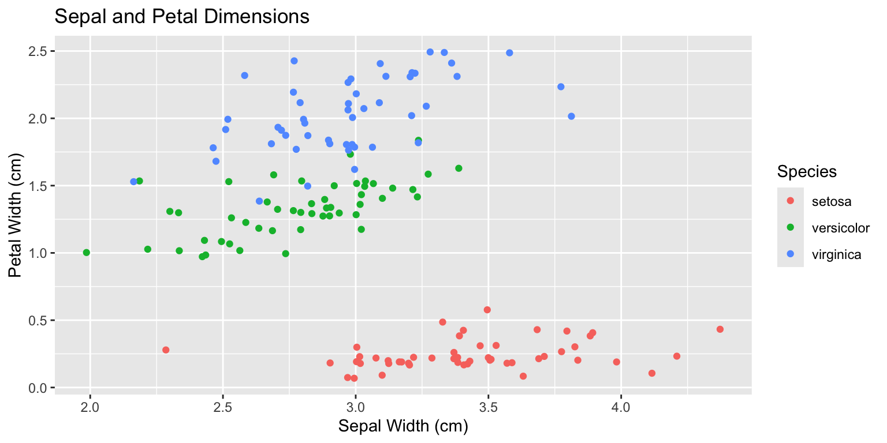

# This code chunk contains code to install all of the dependencies
# necessary to compile and run your report, using if-statements to
# reduce install time for unnecessary code.
# It should be set to eval = F by default, so you aren't installing
# software on someone's computer without their consent.
# This works for packages that are on CRAN
if (!"dplyr" %in% installed.packages()) {
install.packages("dplyr")
}
if (!"remotes" %in% installed.packages()) {
install.packages("remotes")
}
# This is how to do it for a package that's only on github
if (!"emo" %in% installed.packages()) {
remotes::install_github("hadley/emo")Sample Report
Project
Introduction
Introduce your dataset and basic questions for exploration. Explain any unique approaches you will take or any interesting features of your dataset that you have to overcome. Cite the source of your dataset, and briefly discuss how it was collected.
Discuss the variables in the dataset and if there are anomalies in the variables, provide some visual assessment of the anomalies and explain how they may have arisen. You should cover most of the information in your proposal data section, but should primarily use paragraphs and not lists/tables (the exception may be a list of e.g. items which were measured).
Methods
Describe any data cleaning and rearranging you needed to do to get your dataset into a workable form. Make sure to cite any packages which were important in your data cleaning process in this section. For instance, if you used dplyr, then it would be appropriate to say something like
we used the group-apply-combine paradigm with the
dplyrfunctionsgroup_byandsummarize[@dplyr-package] to generate a dataset for each day of the observation period from the 15-minute interval observations in the raw data set.
Topic of Exploration
Here, you want to introduce the first topic you want to explore with your (newly cleaned up) data. Code to process data should be contained in chunks above this point, and those chunks should not be included in the report.
You can add options to executable code like this
[1] 4The echo: false option disables the printing of code (only output is displayed).
If you generate a figure, it should have a caption. Here’s a demonstration of how to do that:

ggplot2 [@ggplot2-package].Then, you can reference Figure 1 in the text and the appropriate cross-reference will be generated.
You can find additional information about formatting figures generated from code in the quarto documentation.
Additional Exploration topic
Add another topic here… as many as you desire, really. Make sure to include a transition between the two sections that connects the two with some sort of logical train of thought.
Conclusion
Here, you want to summarize the main points of what you’ve learned from this investigation, in paragraph form.
Tips
(delete this section from your report!)
Almost anything you might want to know about how to format output in quarto can be found here. Feel free to email/come to office hours to figure out how to do XYZ - part of the goal of making you write this report is that I want you to know how to write e.g. a journal paper in Quarto as well, so now’s the time to experiment.
If you want to know what the wordcount of your report is, you can run the following command in your terminal:
pandoc --lua-filter wordcount.lua report.qmdNotice that I have not pushed _output/report.html or the _output/report_files/ folder to github - this is intentional. I have actually set _output to not show up in git, to encourage you all to NOT push the rendered files to github and to instead work from the markdown files directly.
You may find it cleaner to create a figure subdirectory and store any figures that aren’t created by R/Python in that folder. I encourage you to organize this repository in a sensible way.